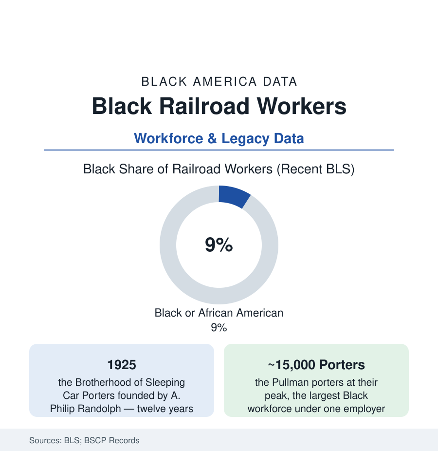

Black Employment
Railroad Workers: From Pullman Porters to the Modern Rails
The porters built a union, a middle class, and a movement on the rails. Today's Black railroad workforce in the BLS and industry data — the legacy file.

No workforce in this section carries more history per worker than the rails: the Pullman porters — for decades the largest body of Black workers under a single employer — converted a servile-designed job into a union, a middle-class ladder, and the organizational skeleton of a freedom movement, while the track and shop crafts barred their doors for a century. Today's Black railroad employment (about nine percent of a much smaller industry in the BLS counts) reads against that inheritance. This article is the legacy file: what the porters built, what the crafts denied, and where the rails' Black workforce stands now.
The Porters: The Job That Built a Class
The Pullman Company's design was explicit: from 1867 it hired formerly enslaved men and their sons as sleeping-car porters — service cast by race, every porter addressed as 'George' after the founder, wages set below subsistence against the expectation of tips, hours that ran to 400 a month in the porters' own accounting. The workforce made of it what the record shows: a relative elite (the porter's income, travel, and polish at the top of the Black working class's internal order), an intelligence network (the porters carrying the Chicago Defender South in their grips — the Great Migration's distribution system, seeding the very departures the census counts), and, from 1925, a union: A. Philip Randolph's Brotherhood of Sleeping Car Porters, twelve years against the company and the era to the 1937 contract — the first major agreement between a Black union and a major corporation, its machinery (the BSCP's locals, its Ladies' Auxiliary, its newspaper relationships) becoming the template and the staff college of the movement generation (E.D. Nixon of the Montgomery boycott a BSCP man; the 1941 March on Washington Randolph's leverage made national). The porters' wives' auxiliary built the union's economics (the consumer and cooperative programs in the record) — the labor file's household form, again.
The Closed Crafts and the Long Litigation
Beside the porters' service tier stood the operating and shop crafts — engineers, firemen, conductors, machinists — whose unions wrote the exclusion into constitutions and whose seniority systems rationed the industry's good jobs by race within living memory: the firemen's and trainmen's agreements that capped Black employment at percentages of districts, the promotion ceilings (Black firemen barred from the engineer's seat regardless of seniority) litigated across the middle century — the Supreme Court's 1944 Tunstall and Steele decisions (the duty of fair representation born in Black railroad cases, the porters' and firemen's filings cracking the craft structure's legal cover) as this file's landmarks — and the consent decrees and merger-era settlements that finally opened the crafts in the 1960s and 70s, just as the industry began its long employment contraction. The pattern this section has met before: the door opened as the room emptied — passenger service collapsing (Amtrak's 1971 arrival inheriting the porters' successors as attendants), freight employment falling from over a million at mid-century to today's roughly 150,000 Class I railroaders in the industry counts.
The Modern Rails: Where Black Railroaders Work
The current industry's counts place Black workers around nine percent of railroad employment — conductors and engineers (the craft doors now formally open, their seniority rosters showing the integration's cohort moving up through the 1990s-2000s hires), car repair and track maintenance (the MOW gangs' long Black history continuing), dispatch and yard operations, and Amtrak's aboard-service tier (the porters' direct descendants — the attendants and conductors of the national passenger network, its workforce among the industry's most diverse in the railroad's own reporting). The economics remain the rails' distinctive offer: Class I wages and railroad retirement (the separate federal system, the industry's pension aristocracy) at the top of the blue-collar table — the jobs' scarcity (hiring in cohorts, the furlough boards' cyclicality, the precision-scheduled-railroading era's crew-size fights in the current labor record) rationing access to them. The heritage layer is load-bearing in the data of memory: the A. Philip Randolph Pullman Porter Museum in Chicago's Pullman district, the porters' oral-history archives, and the Brotherhood's name carried by the labor movement's institutions — the union that taught a movement how to organize, filed under transportation.
Reading the Railroad Data
Nine percent of a shrunken industry, a union in the history books that reorganized a people's politics: the rail file is this section's proof that a workforce's significance is not its headcount. The porters were never the largest Black workforce — the farms and kitchens were larger — but they were the most organized, the most networked, and the most literate in power. Every dataset in this atlas about how Black America moved — its newspapers, its migrations, its movements — ran, at some point, on rails those men worked.
More in Black Employment
The Black Unemployment Rate: The Two-to-One Pattern
Black unemployment runs at roughly twice the White rate — 5.5 percent against 3.3 percent in annual averages — a ratio stable across five decades of federal data. How it is measured and why it persists.
Black Median Weekly Earnings: The 80-Cent Ratio
Black full-time workers earn a median of about $900 a week — roughly 80 cents for every dollar White workers earn. The BLS earnings data by group, gender, and occupation.
Black Labor Force Participation: Working at National Rates
Black labor force participation runs at roughly the national rate — and Black women participate at higher rates than White women. The BLS participation data.
Source: U.S. Bureau of Labor Statistics; Brotherhood of Sleeping Car Porters records; Association of American Railroads; Bureau of Transportation Statistics; National Museum of African American History collections.